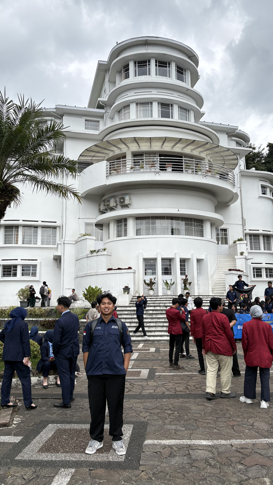
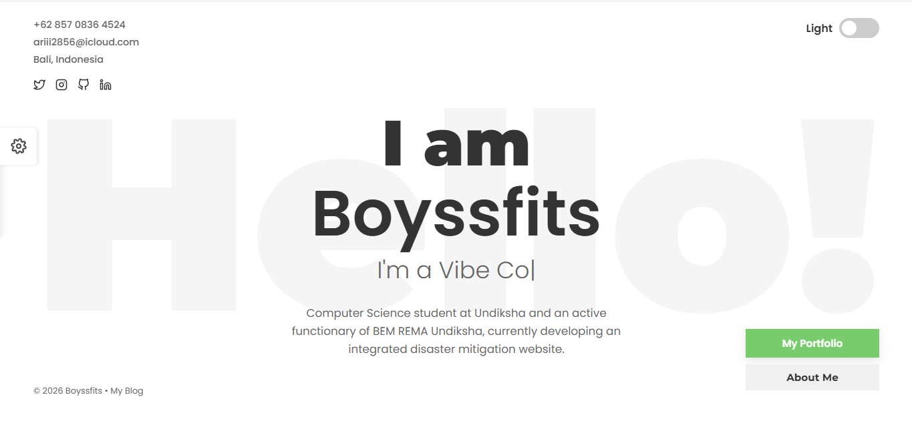

Mahasiswa Undiksha yang memiliki ketertarikan di bidang Web Development.
S1 Ilmu Komputer | 2024 - Sekarang
Fokus pada Komputasi, rekayasa perangkat lunak dan teknologi web.
Jurusan Multimedia | 2021 - 2024

Website portfolio interaktif yang dibangun sebelumnya untuk menampilkan project-project pribadi.
Kunjungi Web Langsung →